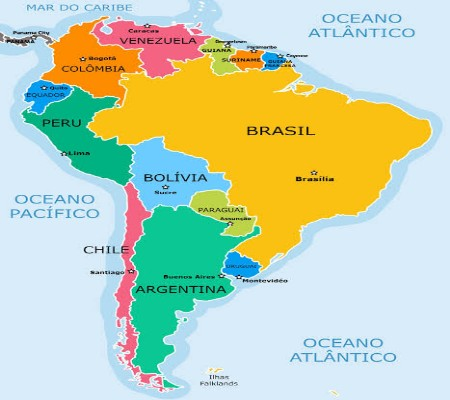

Esse site oferece:
Mapas
População, culinária, cultura e história com um conteúdo simples e direto. Ideal para estudar!
Acessível em Mapas
Galeria
Fotos e desenhos que retratam o passado de várias culturas e eventos históricos.
Acessível em Galeria
Leitura em áudio
Caso seja preguiçoso, aqui você vai poder ouvir a leitura dos artigos em vez de ler.
Acessível somente em Mapas